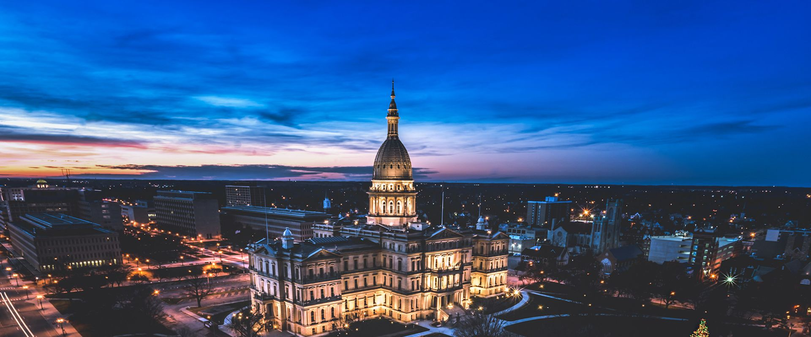

About Lansing
Lansing is the capital city of Michigan, known for its role as the political center of the state and its rich history. It is located in the central part of the Lower Peninsula.
Lansing serves as a hub for government activity, education, and cultural events, making it a vibrant place to live and work. It is home to the impressive Michigan State Capitol building.
Key Facts About Lansing
- Population: 112,644 (as of 2020 Census)
- Year Incorporated: 1859
- Region: Central Michigan
- Classification: Urban
- Average Income Level: Lansing's average income is slightly below the state average, supported by stable jobs in government and education.